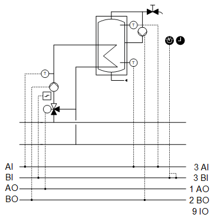
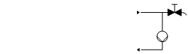
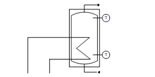
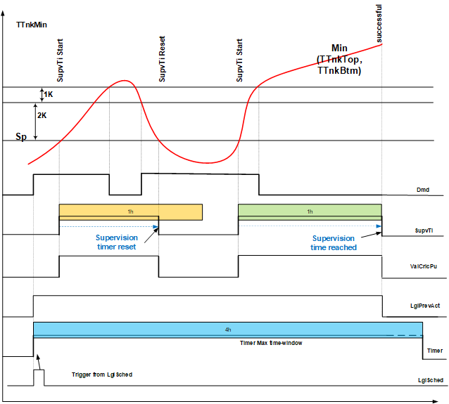

[Dhw21] 生活热水、储水箱充注、内部热交换器
工厂示例 Dhw21 是一个用于生活热水处理的工厂。
Functions
- Storage tank charge
- Legionella prevention
Plant diagram

Components
- Hot water storage tank with internal heat exchanger and two temperature sensors
- Storage tank charging circuit with temperature sensor, pump, and mixing valve
- Circulating pump
设备示例的组件和功能：
成分 | 功能 | BACnet object |
|---|---|---|
| Scheduler program 将设备切换至运行模式：Off |在 | [MSchedule]Scheduler |
| Operating mode switch 将设备切换至：自动 |关闭 |在 | [MI]Operating mode switch |
| Manual operating mode selection 将工厂切换至：Auto | Off | On | [MCnfVal]Manual operating mode selection |
| Present operating mode 报告当前操作模式：Off | On | [MCalcVal]Present operating mode |
| Reason for present operating mode 报告当前操作模式的原因：Exception | Operating mode switch|手动操作模式选择|调度程序 | [MCalcVal]Reason for present operating mode |
| Hot water demand 报告热量产生和分配的热水需求。 | [BCalcVal]Hot water demand |
| Storage tank setpoint 运行模式的储罐温度设定值：开 | [ACnfVal]Tank temperature setpoint |
 | Circulating pump 根据需要打开/off 泵。 |
|
命令 根据需要打开/off 泵。 | > [BO] Command | |
如果设备启动，循环泵就会启用。该工厂以间歇运行方式运行，例如开10分钟，关20分钟。 | ||
 | Hot water storage tank | [AI]Tank temperature, top [AI]Tank temperature, bottom |
Storage tank charge 根据需要打开/off储罐充电。 | [ACnfVal]Tank temperature setpoint | |
Flow temperature setpoint | [ACalcVal] 流量温度设定值 | |
Legionella prevention 保护热水免受军团菌侵害。 |
| |
调度程序 军团菌预防调度程序 | > [BSchedule] 调度程序 | |
设定值 | > [ACnfVal] 设定值 | |
监测时间 | > [CnfVal] 监管时间 | |
状态 供应军团菌预防现状：关闭|进行中 |成功|没有成功|时段已过 | > [MCalcVal] 状态 | |
| Temperature sensor 测量存储电荷的流动温度。 | [AI] 流动温度 |
| Pump |
|
命令 打开/off 充电泵。 | > [BO] Command | |
过错。 此__VAR_000__中，风道面积仅供用户参考；它不用于阻尼器位置计算。没有系数对象或系数计算逻辑。 | > [BI] Fault | |
| Mixing valve 混合返回到流动的所需量的水，以达到所需的流动温度。 |
|
温度控制器 控制存储电荷的流动温度。 | > [控制器]Temperature controller | |
定位 0% = Bypass … 100% = 直通端口 | > [AO] 位置 |


 Circulating pump (
Circulating pump (


储罐充注
由于使用内部热交换器进行充电，因此预计不会出现明显的温度分层。
计划使用两个传感器：一个传感器位于储罐的顶部，一个传感器位于储罐的底部区域。这两个温度决定充电状态。

Key
|
SpTTank | 储罐温度设定值 |
TTnk | 罐体温度 |
TTnkTop | 罐体温度，顶部 |
TTnkBtm | 罐体温度，底部 |
充电需要：
如果高温传感器低于设定值减去开关差（例如 1 K），则储罐已放电且需要充电。
带电：
如果两个温度传感器都高于设定点，则储罐充电。
通过储罐充电电路对储罐进行充电。
特例：
如果顶部传感器发生故障或只有一个传感器（位于储罐中部并作为 TTnkBtm 连接），开关差会自动增加，例如增加 5 K。


姓名 | 描述 | 对象类型 | 默认值 |
|---|---|---|---|
Vlv'TCtr | 温度控制器 控制存储电荷的流动温度。 | 控制器 | N/A |
温度控制器充当 PI 控制器（PID，微分作用时间 Tv=0），将当前流量温度设定值 [PrSpTFl] 与流量温度 [TFl] 进行比较，并计算输出上的阀门位置 [Pos]。 预设了以下控制器变量： | |||
Legionella prevention
该功能用于热水系统中，以防止军团菌生长或作为热消毒剂杀死军团菌。
军团菌是致病菌。军团菌在温度约为 20 °C 至 50 °C 的温水中生长。消毒或杀死军团菌取决于温度和时间。它们在 55 °C 左右开始死亡。
因此，必须每天或每周在特定时间提高热水温度以进行消毒。调度器中存在调度器，用于发送时间脉冲来启动功能。
该功能必须通过时间脉冲激活。在规定的时间内将热水加热至军团菌消毒温度。如果温度在所需的时间内保持在消毒温度以上，则该功能成功并被取消。如果在要求的持续时间内未满足条件，则会生成警报 (LglPrev'Failed)。
功能状态在功能块状态上指示：
1 - 关闭
2 - 进行中
3 - 成功
4 - 不成功
5 - 时间段已过期

Key
|
TTnkTop | 罐体温度，顶部 |
TTnkBtm | 罐体温度，底部 |
Sp | 设定值 |
DMD | 储罐充电控制 |
SupyTI | 监督时间。在此期间温度必须高于设定值。设置为 TiMon，例如 60 分钟。 |
ValCirPu | 对循环泵的要求 |
LglPrevAct | 该功能已激活，但尚未满足条件。 |
定时器 | 最长持续时间的时间范围，例如 4 小时 |
LglSched/Timer | 来自 BSchedule 的时间脉冲触发该功能。在时间范围定时器期间，温度必须高于设定点一段可调节的时间。那么函数就完成了。 |
BACnet objects
姓名 | 描述 | 对象类型 | 默认值 |
|---|---|---|---|
LglPrev'Sched | 调度程序 | BSchedule | N/A |
LglPrev'Sta | 状态 | MCalcVal | N/A |
LglPrev'Failed | 军团菌预防失败 | BCalcVal | N/A |
LglPrev'Sp | 设定值 | ACnfVal | 60 [°C] |
LglPrev'TiMon | 监测时间 | CnfVal | 60 min |
在此期间，循环泵的命令优先级为4。一个参数决定循环泵是运行还是阻塞。

对于生活热水处理，军团菌预防在工厂状态“关闭”下关闭。然而，LglSched 处于活动状态。如果功能的启动脉冲来自 LglSched，但设备状态为“关闭”，则保存脉冲。一旦设备状态更改为“开启”，该功能就会立即执行。
工厂运行模式：
- Off (1)
- On (2)
操作模式在 [MCalcVal] 对象“当前操作模式”上报告。
同时，将当前操作模式的原因报告给另一个 [MCalcVal] 对象：
- Exception (1)
- Operating mode switch (2), resulting from an active (not equal to Auto) operating mode switch
- Manual operating mode selection (3), resulting from an active (not equal to Auto) manual operating mode selection
- Scheduler (4), resulting from an active scheduler
Normal mode
正常模式的来源：
- [MI] Operating mode switch
- [MCnfVal] Manual operating mode selection
- [MSchedule] Scheduler
在正常模式下，组件根据操作模式同时打开和关闭。
Exception mode
异常模式的来源：
- Pump fault
在异常模式下，所有输出均以优先级 5 直接关闭，并且当前操作模式设置为“关闭”。
Start-up control (nested chart SttUpAlmHdl)
以下功能可用于设备的自动启动，例如断电和恢复供电后：
- Fixed switch-on delay (can be set on input pin [DlySttUp])
- The plant remains off to ensure communications are reliable and cross-check references are triggered. 'Exception' is reported as the reason for the present operating mode.
- Automatic acknowledge (2x) of possible pending alarms during a fixed switch-on delay.
- Additional adjustable delay for staged plant ramp-up (can be set on input pin [DlyOn])
Alarm handling (nested chart SttUpAlmHdl)
工厂事件的状态通过 BACnet 对象“工厂状态”获取。状态映射到功能块 CMN_EVT 上。
[CMN_EVT] Common event
可以使用以下功能：
- Automatic acknowledge (2x) after startup
- Alarm acknowledgement with a value object
- Alarm indication:
- For pending alarms On
- For unprocessed alarms flashing - Ability to connect the acknowledge button [BI]
- Ability to connect to an alarm indication [BO], e.g. an alarm lamp through an output block [BO]
- Ability to connect to other alarm handling functions on other plants, e.g. acknowledge button and alarm indication for multiple plants in the same control cabinet
姓名 | 描述 | 类型 | 信号/连接 | 状态文本 | 工程单位 |
|---|---|---|---|---|---|
OpModSwi | Operating mode switch | MI | N/A | 汽车 |关闭 |在 | N/A |
CirPu'Cmd | 循环泵指令 | BO | NO contact | 关闭 |在 | N/A |
TTnkTop | Tank temperature, top | AI | LG-Ni1000 | N/A | 0...100 [°C] |
TTnkBtm | Tank temperature, bottom | AI | LG-Ni1000 | N/A | 0...100 [°C] |
TFl | 流动温度 | AI | LG-Ni1000 | N/A | 0...100 [°C] |
普命令 | 泵命令 | BO | NO contact | 关闭 |在 | N/A |
普福尔特 | 泵故障 报警功能：扩展（通知等级 7） 参考值：触发 时间偏差：0[s] | BI | NO contact | 关闭 |在 | N/A |
Vlv-位置 | 阀门位置 | AO | 0...10V | N/A | 0...100 [%] |